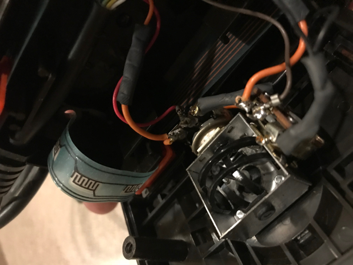
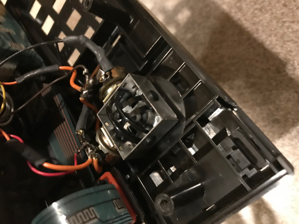

|
The 5200 Supersystem was a fantastic game system. Atari took their existing 8-bit chipset which was used in Atari's home computers and basically turned an Atari 400 computer into a sleek black game machine that could play the best games titles around.
Atari also went a step further and designed the ultimate joystick. Featuring such innovative features as putting START, PAUSE and RESET right onto the controller, the gamer had complete control at the palm of their hand. Also to fire back at Mattel Intellivision that continued to advertise how its joypads were far more accurate then the Atari 8-way joysticks for the Atari 2600 (Model CX-40), Atari engineers lead by Craig Asher who was in charge of designing many of Atari's hand controllers, designed the Atari 5200 joystick with a revolutionary speed sensitive 360 degree control system, also it was loaded (perhaps overloaded) with an assortment of control buttons. PriPrior to the 5200's launch, many engineers petitioned Atari's management not to release the 5200 (many referred to the joysticks as jokesticks) with its current version of analog controllers but Atari under pressure from Intellivision and the newly released Colecovision moved to use the joysticks as the were. The joysticks are excellent for games like SpaceDungeon and Centipede and Missile Command, but try to play Pac Man or any other game that needed precise 4 way control with the ability for the joystick to reset back to neutral and gamer found themselves frustrated with difficult gameplay. Apparently a newer lower cost version of the 5200 joysticks were in the works (The CX-52L). Gone was the rubber hood which wore away within hours with a newer thicker rubber design and added were spring loaded potentiometers. While videogaming history seems to want to label the Atari 5200 with the worst controllers, this is not necessarily true. The Colecovision controllers were painful and difficult to use for long periods of gameplay and while not suffering from the non self-centering issue as with the 5200 controller, the use of the joystick on its controller presented its own difficulty in use as well as the indented and strong springed fire buttons of the Colecovision controller. While
rummaging through a bag
full of 5200 joysticks which came to the Atari through a contact from one of Atari's
5200 former engineers just such an animal showed up from Atari's design
labs. A 5200 joystick which works FANTASTIC on games such as
Pac Man, Ms. Pac Man and Mountain King. Atari engineers
also were working on a digital joystick and a 5200 arcade joystick as well.
Overall shot of the 52L
While there is no boot on it to show the plate mount, a boot can fit over it to hide the plate mount underneath. The stick sits lower than a regular CX52.
Apparently this modified prototype was from a batch built here in the US in Atari's El Paso assembly plant.


Several inside views of the spring loaded POTs assembly from different angles. It appears to be stamped sheet metal for the box with a cupped top center section for the ball of the control stalk to rest into. The XY guides are a pair of ABS plastic pieces to rock the stick and to move each of the XY POTs for player movement. The design allows a very smooth free movement of the stick and has a solid feel to it.
Many people both original owners during the time of the 5200's release as well as today's gamers often pan the 5200 controllers (the CX52's) for their design. The lack of centering is the key fault of the stick. The other fault lies in the side fire buttons being rubber and not a more durable and tactile plastic design. The 52L's from the mechanical drawings show the side buttons replaced with springed plastic buttons. This prototype above is just a refitted CX52 that Atari engineering was most likely testing and demostrating a possible solution so the plastic fire buttons are not present. Perhaps its better to describe the CX52's as more of a just too forward thinking a design for 1980's gamers. We see today in nearly all modern gaming consoles the use of analog pads or small thumsticks for control. Those modern controllers of course do have self centering and do have more durable plastic firebuttons. Atari should've began work on replacements and refit kits literally from the moment the 5200's began being assembled so that within 4-6 months they could've been released and corrected the shortcomings of what was otherwise a very innovative and forward thought out controller. The 5200L and the 52L controllers were on the drawing board in the early spring of 1984. What engineers didn't know was very quietly Atari had already canceled the 5200 at the very beginning of 1984 as the Atari 7800 ProSystem would soon be taking it's place in the Summer of 1984. It would be shown at the CES in May of 1984.
|